IO Graphs plot packet/byte rates over time. If you open an IO Graph on a trace with only one conversation, you see the overall rate. How would you isolate just retransmission traffic on the same graph to visually correlate it with overall throughput dips?
Use Graphs to View Trends
Wireshark offers numerous graphs to depict traffic flow trends. Some graphs are directional (TCP-specific graphs). IO Graphs depict traffic flowing in both directions and support display filters and CALC values for Advanced IO Graphs.
Graphs available under Statistics: Basic IO Graphs, Advanced IO Graphs, TCP Round Trip Time Graph, TCP Throughput Graph, TCP Time-Sequence Graph (Stevens and tcptrace).
If your graph appears empty or shows too few plot points, it might be a unidirectional graph. Examine the title bar — which direction is being graphed? Close the graph, select a packet traveling in the opposite direction, and rebuild the graph.
Generate Basic IO Graphs
Select Statistics | IO Graphs to plot packets per second rate of all traffic. By default: X axis = 1 second tick interval, Y axis = packets/tick. You can graph five traffic channels simultaneously. Click any point to jump to the first packet in that range.
The scale is set to Auto by default. Set to a definite value (10 to 2 billion) or logarithmic. Logarithmic scales help when plotting values with very large differences (e.g., total traffic vs. retransmissions).
Filter IO Graphs
To graph specific traffic, apply a display filter to any of the five graph channels. Right-click a field in the Packet Details pane and select Copy | Field or Copy | As a Filter to paste a filter into an IO Graph channel.
Smoothing
As of Wireshark 1.8, the IO Graph supports a Smooth drop-down for moving averages (M.avg4 through M.avg1024). The smoothing filter takes a subset of the full data set and averages before plotting. Wireshark uses a central moving average (CMA) that considers both previous and future subsets.
Print Your IO Graph
Click Save to save your IO Graph (PNG by default; also bmp, gif, jpeg, tiff). Note: Save does not save X and Y axis values, making it somewhat useless for documentation. Take a screenshot instead.
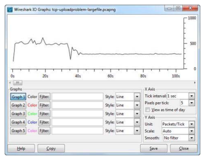
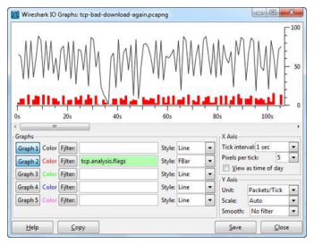
Advanced IO Graphs add CALC functions beyond simple packet counting. SUM(*) with tcp.len plots TCP data volume. COUNT(*) with tcp.analysis.retransmission plots retransmission occurrences. What is the difference between using SUM(tcp.len) vs COUNT(*) when analyzing retransmissions?
Generate Advanced IO Graphs
Access Advanced IO Graphs under the Y Axis Unit drop-down menu. Advanced IO Graphs offer the following CALC options:
- SUM(*): Adds up and plots the value of a field for all instances seen during the tick interval. Example:
SUM(tcp.len)plots the total bytes of TCP data per tick. - MIN(*): Plots the minimum value seen in the field during the tick interval
- AVG(*): Plots the average value seen in the field during the tick interval
- MAX(*): Plots the maximum value seen in the field during the tick interval
- COUNT(*): Counts the number of occurrences of a field or characteristic seen during the tick interval
- LOAD(*): Measures response time fields only (e.g.,
smb.time,rpc.time)
SUM(*) Calc
To plot TCP data volume: use SUM(tcp.len). For bidirectional, no filter. For one direction of a bidirectional flow, add a filter for the source IP: ip.src==x.x.x.x.
Another use: SUM(tcp.seq) plots TCP sequence number growth over time. A sudden drop in the sequence number indicates a problem in the data transfer process. Click that point in the IO Graph to jump to that packet in the Packet List pane.
COUNT(*) Calc
Most useful for graphing Wireshark TCP analysis flags. Example: graph tcp.analysis.duplicate_ack, tcp.analysis.lost_segment, and tcp.analysis.retransmission together to see the relationship between packet loss events.
Set the Y axis to logarithmic when comparing packet counts with discrete event counts — otherwise the small event counts will be invisible on the same scale as total packet counts.
LOAD(*) Calc
Used with response time fields like smb.time and rpc.time. A value of 1,000 on the Y axis means one command is in flight at that time. Large gaps between SMB requests (low values with gaps) indicate a slow client — the server is idle waiting for requests. If gaps are small or absent, the server is the bottleneck.
When graphing total traffic (thousands of packets/tick) and TCP analysis flags (1-10 per tick) on the same graph, the flag values will appear as a flat line at the bottom. Set Y axis to Logarithmic to see the relationship clearly. Logarithmic Y axis can contain 1, 10, 100 and 1000 instead of 1, 2, 3, 4.
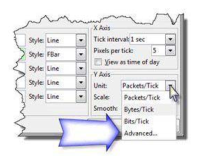
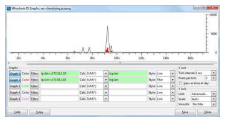
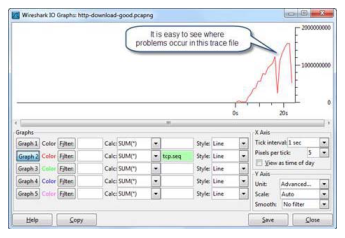
You want to compare IO Graphs from two different trace files — a good download and a bad download. They were captured at different times. What problem arises when you simply merge the two trace files and create an IO Graph? How does the Capinfos -s parameter help?
Compare Traffic Trends in IO Graphs
To compare two trace files in a single IO Graph, follow this 4-step process:
- Examine the time difference between the trace files
- If necessary, alter one of the trace file timestamps so it will plot directly in front of or behind the other trace file — see Edit | Time Reference
- Merge the two trace files — see Merge Trace Files with Mergecap
- Open the merged trace file and generate an IO Graph
Use the Mergecap command to merge trace files:
mergecap -w xfersmerged2.pcapng http-download-bad.pcapng http-download-good.pcapng
The merged IO Graph immediately shows the difference in IO rates — the slow file transfer at the start shows low IO with a long duration, and the faster download shows higher IO over a shorter period.
The -s parameter displays the start and end capture times in raw seconds. This information makes it much easier to use Editcap to time shift a trace file (editcap -t <seconds>) so the traces can fit in one IO Graph. As of Wireshark 1.8, you can also right-click a packet in the Packet List and select Time Shift to change arrival times.
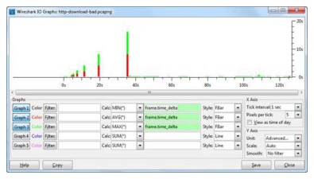
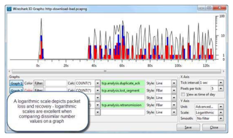
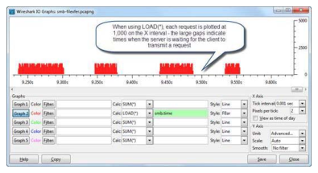
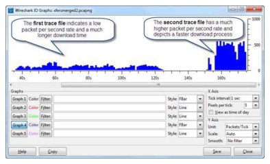
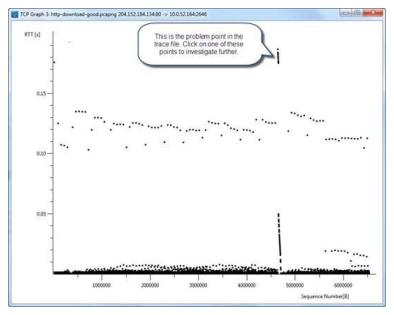
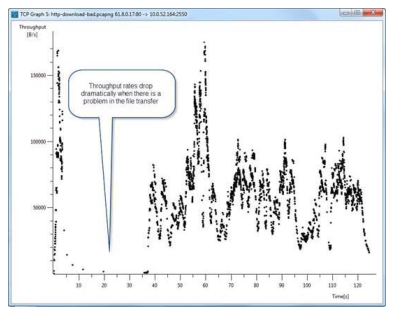
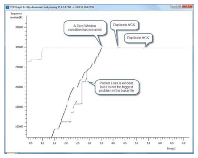
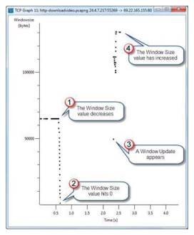
The TCP Round Trip Time Graph plots the RTT from a data packet to its corresponding ACK. It is UNIDIRECTIONAL. If you open a Round Trip Time Graph and see nothing plotted, what is the likely cause? And what does a vertical stripe pattern in the RTT graph indicate?
Graph Round Trip Time
Select Statistics | TCP Stream Graph | Round Trip Time Graph to depict the round trip time from a data packet to the corresponding ACK packet. Latency times are calculated as the time between a TCP data packet and the related acknowledgment.
Round Trip Time graphs are unidirectional — if you do not see anything plotted when you open a round trip time graph, you might be looking at a packet traveling in the opposite direction than data is flowing. Select a data packet and load the graph again.
The Y axis defines the round trip time in seconds. The X axis defines the TCP sequence number. High RTT values at many points = high latency path or packet loss recovery in progress. Specific moments of high RTT surrounded by otherwise normal RTT = bursty network conditions.
Consistent vertical stripes in the RTT graph appear when packet loss occurs and a high number of Duplicate ACKs are sent. Vertical stripes can also be seen when data is queued along a path and then suddenly forwarded through the queuing device. Zoom in on an area by placing your cursor over it and pressing + (zoom in) or - (zoom out).
You can also use Advanced IO Graphs to plot the average RTT using tcp.analysis.ack_rtt with CALC: AVG(*). This gives a time-series view (X=time) rather than the sequence-number view of the TCP Stream Graph.
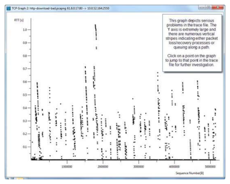
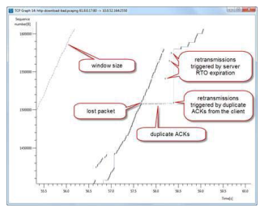
The TCP Time-Sequence Graph (tcptrace) plots each TCP segment as an I-bar. In an ideal data transfer, what pattern should you see? What does it mean when the grey receive window line moves TOWARD the I-bars? And what happens when the window size line TOUCHES the I-bars?
Graph TCP Sequence Numbers over Time
Select Statistics | TCP Stream Graph and either Time-Sequence Graph (Stevens) or Time-Sequence Graph (tcptrace). Since more information is available using the Time-Sequence Graph (tcptrace), we use this graph.
TCP headers contain a sequence number field that increments by the number of bytes sent during data transfer. If a TCP header sequence number is 1,000 and there are 200 bytes of data in the packet, the TCP header from this source should contain the sequence number 1,200 next. If the next packet contains sequence number 1,000 again, this is a retransmission packet. If the next TCP packet contains sequence number 1,400, a segment must have been lost.
The tcptrace Time-Sequence Graph plots TCP segments in an 'I bar' format. Taller I bars contain more data. The TCP Time-Sequence Graph graphs data moving in one direction — ensure you have selected a packet containing data or traveling in the direction of data flow.
Interpret TCP Window Size Issues
The TCP window size advertises the amount of buffer space available. When the TCP window size grey line moves closer to the plotted I bars, the receive window size is decreasing. When they touch, the receiver has indicated their TCP window size is zero and no more data may be received.
The smaller arrows in the graph point out the window probe packets that are sent to determine if the window has opened up.
Wireshark 1.6 introduced the Window Scaling graph — this plots the calculated window size field (tcp.window_size) in each packet sent by one host. It is also unidirectional. Select an ACK packet being sent from the host that is receiving data. Then select Statistics | TCP Stream Graph | Window Scaling Graph.
Interpret Packet Loss, Duplicate ACKs and Retransmissions
If you are upstream from packet loss (sees packets before packet loss occurs), you will see duplicate I bars (same sequence number, two different times). If you are downstream (sees skipped TCP sequence numbers), you will see gaps in the I bars.
Duplicate ACKs are noted as numerous ticks along the receive line. A high number of Duplicate ACKs may indicate high path latency between the sender and the receiver. Retransmissions triggered by Duplicate ACKs will occur along the horizontal line across from the Duplicate ACKs. Retransmissions triggered by RTO (timeout) are not preceded by Duplicate ACKs.
The Time-Sequence Graph (tcptrace) shows more information than the Window Scaling graph. Try it yourself — open http-downloadvideo.pcapng, select a data packet, and open the TCP Time-Sequence Graph. Zoom in to the point where the available buffer space runs out. Nice.
TL;DR — Chapter 21
Wireshark's IO Graph, TCP Round Trip Time Graph, Time-Sequence Graph and Throughput Graph build pictures of TCP data flow and can help identify the cause of network performance problems.
Advanced IO Graphs enable you to use CALC values such as SUM(*), COUNT(*), MIN(*), MAX(*) and LOAD(*) on the traffic. Display filters can also be placed on the traffic in the Advanced IO Graphs.
The Round Trip Time Graph tracks the time between data being transmitted and the associated TCP ACK.
Throughput Graphs are unidirectional and plot the total amount of bytes seen in the trace at specific points in time. If throughput values are low, data transfer time increases.
TCP Time-Sequence Graphs (also unidirectional) plot the individual TCP packets based on the TCP sequence number changes over time. In addition, this graph type depicts the ACKs seen and the window size. In a smooth data transfer process, the 'I bar line' goes from the lower left corner to the upper right corner along a smooth path.